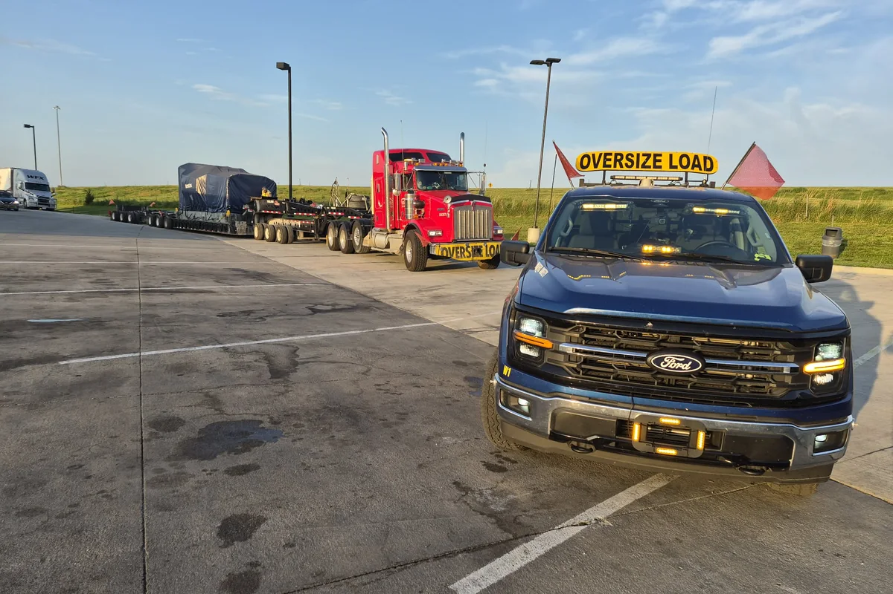
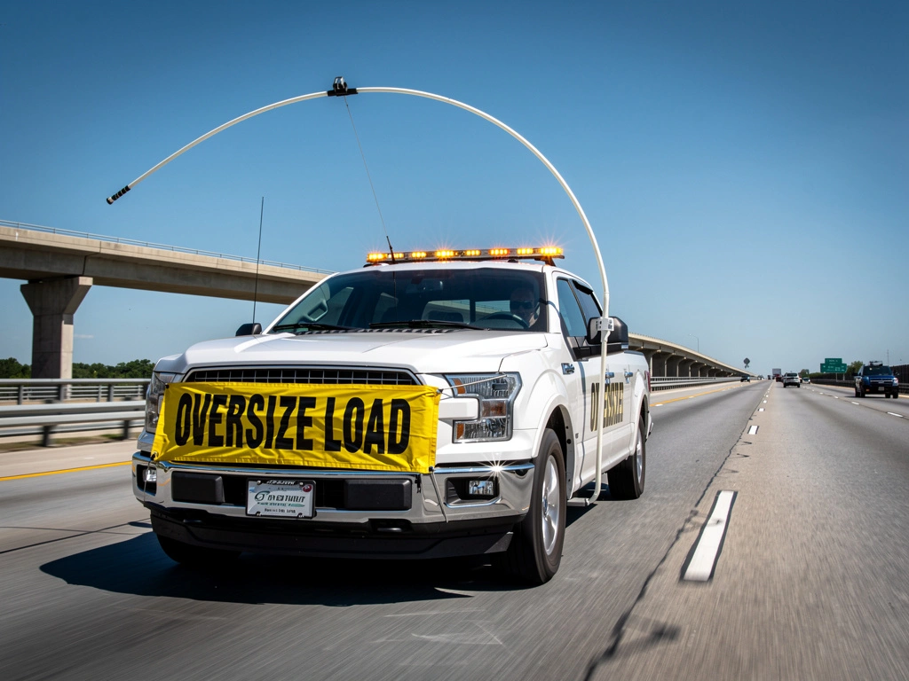
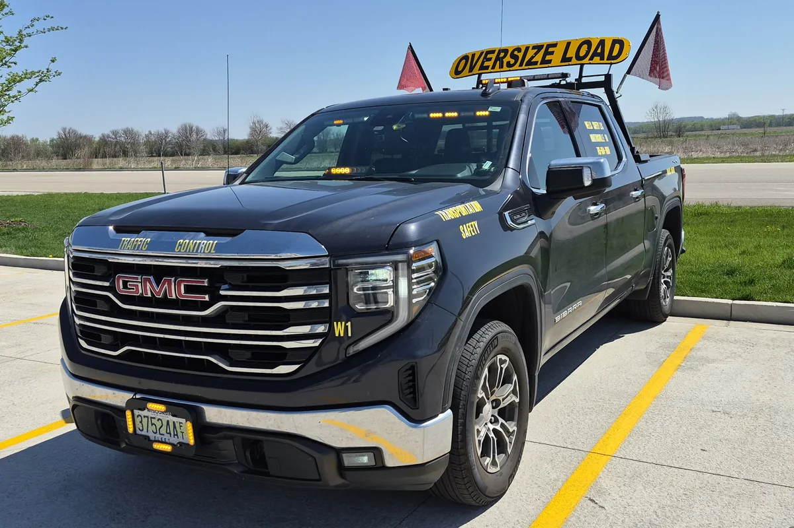
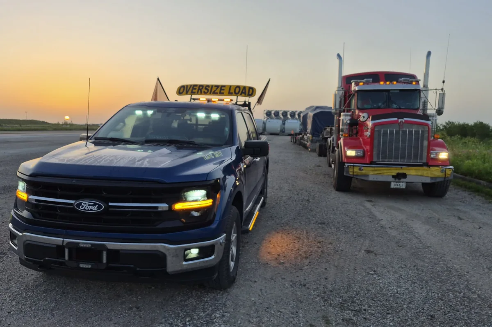
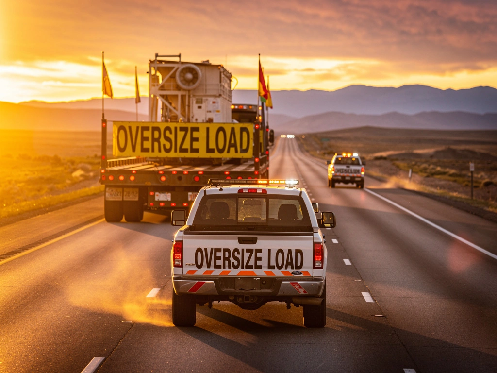

Home › Services
Escort Services
Lead and chase cars, height poles, route surveys and full superload packages — staffed by certified drivers with the right equipment.
Service 01
Lead & Chase Escort
The core of what we do. A lead car runs ahead of the load to warn oncoming traffic, call out hazards and hold intersections; a chase car runs behind to shield the load, manage passing traffic and watch the trailer. Most over-width permits require one or both.
Every vehicle carries a compliant OVERSIZE LOAD sign, amber LED warning lights, red and orange flags, cones, STOP/SLOW paddles and both CB and handheld radios so we stay in constant contact with your driver from staging to delivery.
- Front (lead) and rear (chase) positions, single or paired
- Continuous CB and two-way radio contact with the load driver
- Traffic control and intersection holds where permits allow
- Certified flaggers on every crew


Service 02
High Pole / Height Pole
For over-height loads, a high pole car runs ahead with a flexible fiberglass pole set several inches above your actual load height. If the pole touches, we stop the load before it does — and reroute.
We set and verify the pole height against your measured load at staging, not from the paperwork, because the paperwork is what gets loads stuck under bridges. Overpasses, signals, sign trusses, canopies and low-hanging utility lines all get cleared before your load reaches them.
- Pole calibrated to the measured load height at staging
- Clearance verification on every span, signal and line on route
- Immediate stop-and-reroute protocol on any contact
- Meets over-height escort conditions in our certified states
Service 03
Route Surveys & Permit Support
A route survey is the cheapest insurance on an oversize move. We physically drive the proposed route ahead of the load and document what the map does not show: actual vertical clearances, turn radii at tight intersections, grade changes, shoulder conditions, active construction and weight-restricted structures.
You get a written summary with photos and measurements, plus our recommended reroutes for anything that will not work. We also review your state permits with you so escort counts, travel windows, curfews and holiday restrictions are settled before the wheels turn.
- Physical drive-through of the full permitted route
- Documented clearances, turn radii, grades and pinch points
- Photo record and written recommendations
- Permit condition review and reroute planning


Service 04
Superload & Night Moves
Some loads need more than a car front and back. Superloads — transformers, turbine components, bridge girders, refinery vessels — often move on restricted night windows with multi-car escort packages, law enforcement participation and utility crews standing by to lift lines.
We build and run the whole escort package: how many cars, in which positions, coordinated with the police detail, the utility crew and your driver on a single agreed communication plan.
- Multi-car convoy planning and staffing
- Permitted night and curfew-window operation
- Law enforcement escort coordination
- Utility line lift and traffic signal rotation scheduling
Also Available
Supporting services
Add these to any escort package, or book them on their own.
Steer Car Coordination
Coordination with steerman and rear-steer operators on long multi-axle trailers through tight urban turns and roundabouts.
Traffic Control & Flagging
Certified flaggers for rolling blocks, lane closures and intersection holds where the permit and jurisdiction allow.
Bucket Truck Coordination
Scheduling of utility bucket crews to raise or hold lines and traffic signals for over-height loads on the route.
Wind Energy Transport
Blade, tower section and nacelle escorts, including remote site access roads and staging yard movements.
Modular & Manufactured Housing
Escorts for modular buildings and manufactured homes, including multi-section moves and set-day site delivery.
Emergency & Short-Notice
Same-day and overnight coverage when a scheduled escort falls through or a load needs to move now. Call dispatch directly.
Common Questions
Escort requirements, answered
How many escorts does my load need?
It depends on the dimensions and on every state the load passes through — requirements are set per jurisdiction and written into your permit. As a rough guide, many states require a single escort past roughly 12 feet wide, front and rear escorts past roughly 14 to 16 feet, and a high pole car for anything over about 14 feet 6 inches tall. Send us your dimensions and route and we will confirm the exact requirement for each state on the run.
How far in advance should I book?
Two to five business days is comfortable for most lanes and lets us fit a route survey in if one is needed. We do take same-day and overnight work whenever we have a car free — call dispatch rather than emailing if the move is urgent.
Do you handle the permits?
Permits are pulled by the carrier or a permit service, but we review them with you and flag anything in the conditions that affects the escort plan — required escort counts, travel windows, curfews, holiday and weekend restrictions, and route-specific notes.
What are your rates?
We quote per move rather than by a single blanket per-mile figure, because escort count, deadhead distance, wait time, survey work and night or weekend windows all move the number. Send the load details and you will get an itemized quote you can put straight into your costing.
Can you provide a certificate of insurance?
Yes. We carry $1M commercial auto liability and will send a certificate naming your company as certificate holder before the move. Ask dispatch when you book.

Ready When You Are
Get your load covered
Tell us the dimensions and the lane. We'll confirm what escorts your permits require and quote it back — usually the same day.